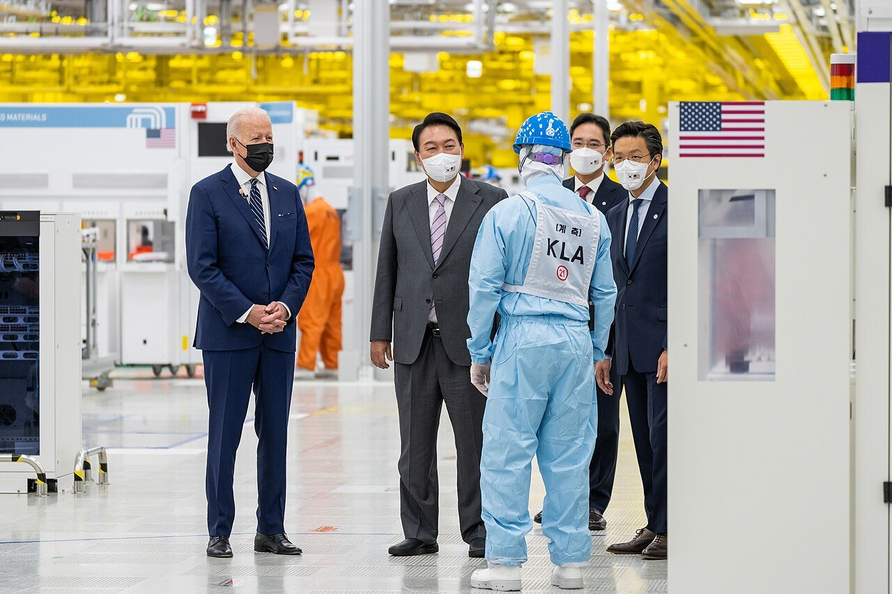
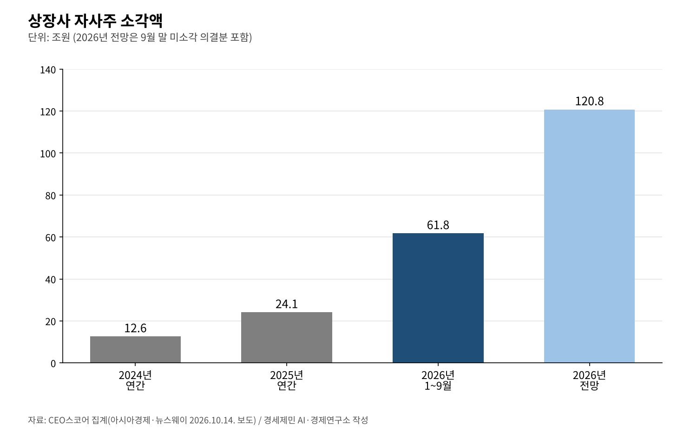
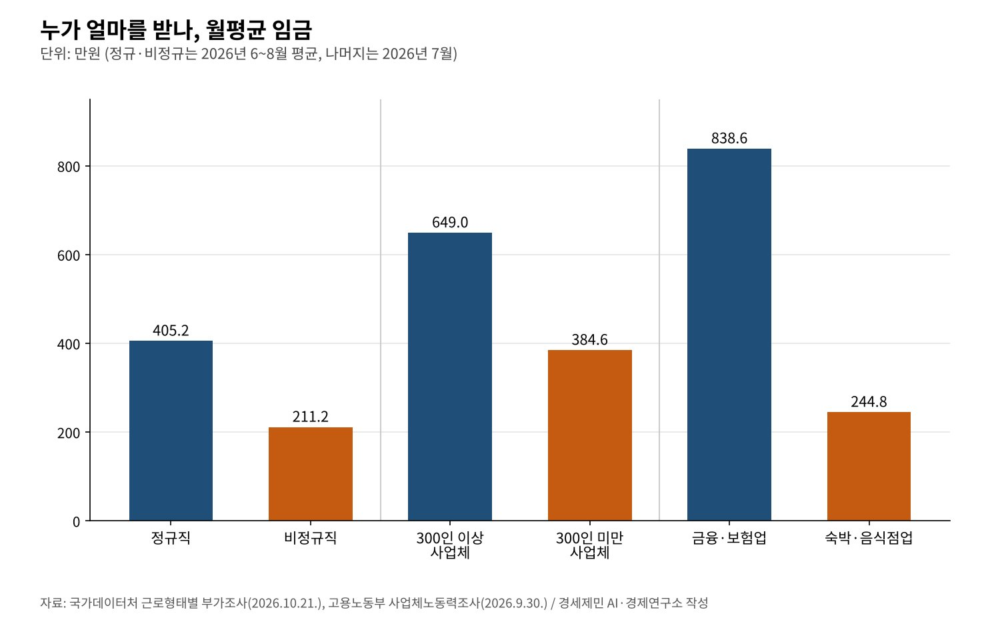

[코스피 5000의 이면③] 자사주 소각 62조원의 해, 노동자 몫은 어디에 있나
상장사 자사주 소각 1~9월 61조7522억원, 지난해 연간보다 156% 많아
7월 실질임금 0.3% 감소, 비정규직 월평균 임금 211만2000원으로 정규직의 절반
2027년 최저임금 1만700원(3.7%), 영향 근로자 66만~297만8000명
AI경세제민=김갑봉 기자 | 올해 상장사가 9월까지 소각한 자사주는 61조7522억원이다. 기업데이터연구소 CEO스코어가 10월 14일 낸 집계다. 지난해 연간 24조910억원보다 156.3% 많다. 이미 의결한 물량까지 더하면 올해 120조7923억원에 이른다.
같은 해 일하는 사람의 지갑은 얇아졌다. 고용노동부 조사로 2026년 7월 근로자 1인당 실질임금은 360만4000원이다. 1년 전보다 0.3% 줄었다. 비정규직은 867만1000명으로 10만3000명 늘었다.
이 연재의 옛 원고는 2025년 주주환원 71조원을 놓고 노동의 몫을 물었다. 그 사이 주주환원의 단위가 커졌다. 옛 원고 제목의 171조원은 공표 자료로 확인하지 못해 쓰지 않는다. 확인한 숫자만으로 같은 질문을 다시 던진다.

소각 62조원, 삼성전자와 SK하이닉스가 절반
CEO스코어 집계를 보면 1~9월 자사주를 소각한 상장사는 391곳이다. 2024년 134곳의 세 배 가까이다. 삼성전자가 17조722억원, SK하이닉스가 14조5503억원을 소각했다. 두 회사 합계 31조6225억원으로 전체의 51.2%다.
소각 규모는 2024년 연간 12조6085억원, 2025년 연간 24조910억원이었다. 올해는 9월까지만 61조7522억원이다. 2월 25일 국회를 통과한 3차 상법 개정이 취득한 자사주를 1년 안에 소각하도록 했다.

삼성전자는 따로 큰 계획을 냈다. 8월 21일 이사회는 올해 주주환원 규모를 90조~110조원으로 예상한다고 밝혔다. 2020년 20조3000억원의 약 다섯 배다. 3분기에 정규배당을 포함해 약 30조원을 현금으로 배당한다.
같은 날 이사회는 임직원 보상용 자사주 약 15조원 매입도 의결했다. 주주환원 재원과는 별도다. 주주 몫과 함께 일하는 사람의 몫을 지분으로 나누는 방식이 커지고 있다는 점은 눈여겨볼 대목이다.
이익과 임금의 속도 차
국민계정은 소득이 어디로 갔는지 보여 준다. 한국은행에 따르면 2024년 피용자보수는 4.7% 늘었고 총영업잉여는 8.6% 늘었다. 2025년에는 피용자보수 3.8%, 총영업잉여 5.5%였다. 두 해 연속 기업 쪽 몫이 빨리 컸다.
기업의 수익성도 나아졌다. 한국은행 2025년 기업경영분석에서 비금융 영리법인의 매출액영업이익률은 4.6%에서 5.2%로 올랐다. 매출액 증가율은 3.7%에서 2.4%로 낮아졌다. 덜 팔고도 더 남긴 해였다.
임금은 물가를 겨우 따라간다. 2026년 7월 근로자 1인당 임금총액은 431만6000원으로 2.5% 올랐다. 같은 달 소비자물가는 2.8% 올라 실질임금은 0.3% 줄었다. 상용근로자는 463만3000원으로 3.4% 올랐다.
같은 나라, 다른 월급
규모별 격차는 커졌다. 2026년 7월 300인 이상 사업체 근로자 1인당 임금은 649만원으로 3.3% 올랐다. 300인 미만은 384만6000원으로 1.7% 오르는 데 그쳤다. 큰 회사일수록 더 많이, 더 빨리 오른다.
업종별 격차는 더 크다. 7월 임금총액이 가장 많은 금융·보험업은 838만6000원이다. 가장 적은 숙박·음식점업은 244만8000원이다. 3.4배 차이다. 어디서 일하느냐가 얼마를 받느냐를 가른다.

국가데이터처가 10월 21일 낸 근로형태별 부가조사를 보면 2026년 6~8월 정규직 월평균 임금은 405만2000원이다. 15만6000원 올랐다. 비정규직은 211만2000원으로 2만4000원 올랐다. 격차는 194만원으로 벌어졌다.
비정규직 867만1000명은 임금근로자의 38.5%다. 시간제 근로자는 438만2000명으로 15만2000명 늘었고 월평균 임금은 114만6000원이다. 비정규직의 국민연금 가입률은 36.5%, 고용보험은 54.0%에 머문다.
최저임금 1만700원, 영향 근로자 297만8000명
최저임금위원회는 7월 14일 2027년 최저임금을 시간당 1만700원으로 의결했다. 올해 1만320원보다 380원(3.7%) 올랐다. 월 209시간 기준 223만6300원이다. 고용노동부가 8월 5일 고시했다.
표결은 사용자위원안 15표, 근로자위원안 11표, 무효 1표였다. 노동계 최종안은 1만730원이었다. 위원회는 새 최저임금의 영향을 받는 근로자를 사업체 조사 기준 66만명, 가구 조사 기준 297만8000명으로 추정했다.
민주노총과 소상공인연합회가 모두 이의를 제기했지만 고용노동부는 받아들이지 않았다. 노동계는 낮다고, 소상공인은 높다고 본 셈이다. 같은 숫자를 두고 양쪽이 모두 불만인 데에 이 나라 분배 구조의 긴장이 담겨 있다.
주주 몫과 노동 몫을 함께 키우려면
첫째, 임직원 지분 보상을 넓히는 일이다. 3차 상법 개정은 자사주를 임직원 보상과 우리사주에 쓰는 길을 예외로 열어 두었다. 삼성전자의 15조원 임직원 보상용 매입은 그 규모를 보여 준다. 협력사와 비정규직까지 넓힐 방안이 과제다.
둘째, 이익이 임금으로 가는 경로를 투명하게 하는 일이다. 매출액영업이익률이 오른 해에 실질임금이 줄었다. 기업이 주주환원 계획을 공시하듯 성과 배분 원칙도 함께 밝히면 노사가 같은 숫자를 놓고 협상할 수 있다.
셋째, 바닥의 안전망이다. 비정규직의 국민연금 가입률은 36.5%다. 주식을 가진 사람과 못 가진 사람의 격차는 주가보다 사회보험에서 먼저 줄일 수 있다. 최저임금위 공익위원이 권고한 제도개선 추진단이 그 논의의 자리다.
코스피는 6월 9114.55로 정점을 찍고 10월 20일 5552.74로 내려왔다. 지수는 오르내려도 주주환원은 법으로 굳었다. 노동의 몫을 지키는 규칙도 같은 무게로 세워야 코스피 5000 시대의 성과가 더 많은 사람에게 닿는다.
참고문헌
기관 자료
- 한국은행, 「2024년 국민계정(확정) 및 2025년 국민계정(잠정)」, 2026년 6월 9일. KDI 경제교육·정보센터 게재. https://eiec.kdi.re.kr/policy/materialView.do?num=282377
- 한국은행, 「2025년 연간 기업경영분석 결과」, 2026년 10월. KDI 경제교육·정보센터 게재. https://eiec.kdi.re.kr/policy/materialView.do?num=288345
- 고용노동부, 「2026년 8월 사업체노동력조사 및 2026년 4월 시도별 임금·근로시간조사 결과」, 2026년 9월 30일. KDI 경제교육·정보센터 게재. https://eiec.kdi.re.kr/policy/materialView.do?num=287627
- 국가데이터처, 「2026년 8월 경제활동인구조사 근로형태별 부가조사 결과」, 2026년 10월 21일. KDI 경제교육·정보센터 게재. https://eiec.kdi.re.kr/policy/materialView.do?num=288340
- 고용노동부(최저임금위원회), 「2027년 적용 최저임금안 시간급 10,700원」(보도참고자료), 2026년 7월 14일. KDI 경제교육·정보센터 게재. https://eiec.kdi.re.kr/policy/materialView.do?num=284266
- 고용노동부, 「2027년도 적용 최저임금 시간급 10,700원」(고시 보도자료), 2026년 8월 5일. KDI 경제교육·정보센터 게재. https://eiec.kdi.re.kr/policy/materialView.do?num=285106
- 삼성전자 반도체 뉴스룸, 삼성전자 주주환원 시행 방안 이사회 의결 보도자료, 2026년 8월 21일. https://news.samsungsemiconductor.com/kr/?p=37327
언론 보도
- 아시아경제, "올해 상장사 자사주 소각 62조, 1년새 2.5배↑…삼성·SK하이닉스가 절반"(CEO스코어 집계), 2026년 10월 14일. https://view.asiae.co.kr/article/2026101409340182493
- 뉴스웨이, "삼성전자 17조·SK하이닉스 14조···국내 상장사 자사주 소각 '역대급', 왜", 2026년 10월 14일. https://newsway.co.kr/news/view?ud=2026101409262938682
- YTN, "삼성전자 '올해 최대 110조 주주환원...국내 역대 최대'", 2026년 8월 21일. https://www.ytn.co.kr/_ln/0102_202608212302214686
- 임채현, "삼성전자 곳간 연다...올해 주주환원 최대 '110조'", 데일리안, 2026년 8월 21일. https://m.dailian.co.kr/news/view/1680943
- 한국경제TV, "'자사주 의무 소각' 3차 상법 개정안, 국회 본회의 통과", 2026년 2월 25일. https://www.wowtv.co.kr/NewsCenter/News/Read?articleId=A202602250533
- 이유주, "2027년 최저임금 시급 1만 700원 확정…올해보다 3.7% 인상", 베이비뉴스(다음 게재), 2026년 7월 15일. https://v.daum.net/v/20260715114950214
- 서울신문, "[마감시황]코스피 3.73% 급락 마감…기관·외국인 동반 매도에 5552.74", 2026년 10월 20일. https://www.seoul.co.kr/news/economy/securities/2026/10/20/20261020500235
- YTN, 코스피 9114.55 사상 최고 마감 속보, 2026년 6월 22일. https://www.ytn.co.kr/_cs/_ln_0102_202606221539367257_005.html
[사진 출처]
- [사진1] Office of the President of the United States, "President Biden and Yoon Suk-yeol talked to staffs of Samsung Electronics.jpg", 위키미디어 공용, 퍼블릭 도메인. https://commons.wikimedia.org/wiki/File:President_Biden_and_Yoon_Suk-yeol_talked_to_staffs_of_Samsung_Electronics.jpg
※ 이 기사는 AI 프로그램 클로드를 활용해 작성했습니다.
관련기사
- [코스피 5000의 이면①] LS에식스 상장 철회 아홉 달, 중복상장은 '원칙 금지'로 굳었다
- [코스피 5000의 이면②] 아틀라스는 2028년 공장에 들어온다, 로봇은 소비하지 않는다
- [서평] 슘페터 『경제분석의 역사』 1권, 300년 전 질문이 오늘도 유효하다
- [서평] 『진보를 위한 주식투자』, 일하는 사람은 자본시장을 외면해도 되는가
저작권자 © AI경세제민 무단전재 및 재배포, AI학습 및 활용 금지